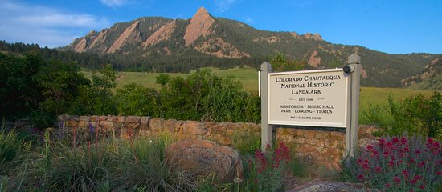
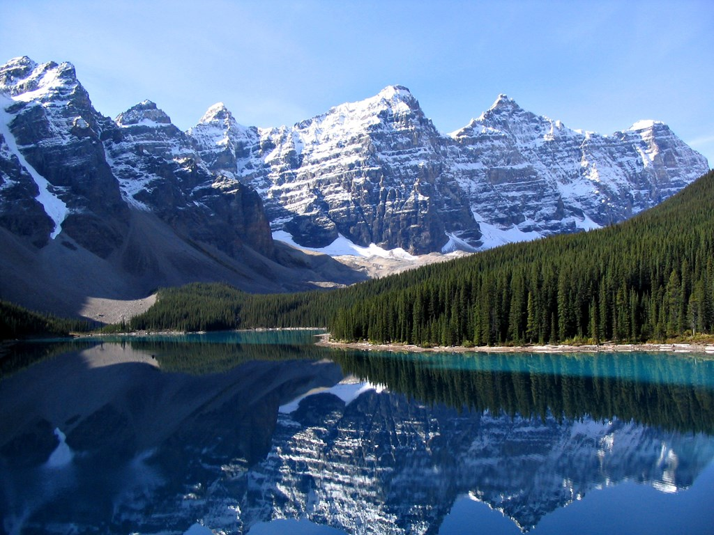
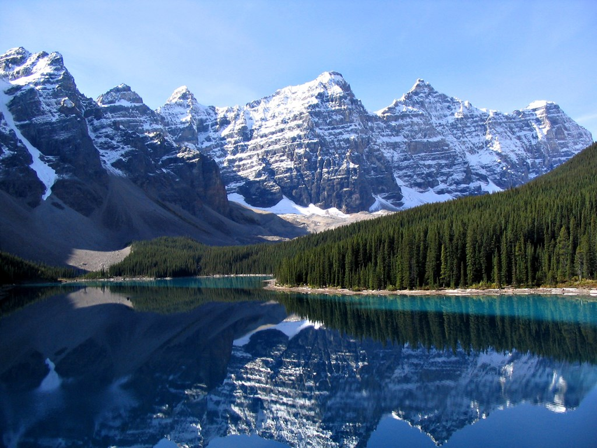

Outdoors
Boulder boasts so many outdoor opportunities, that narrowing them down to just ten is quite a feat. With several national parks in the area, monthly outdoor festivals, and open spaces well equipped for all of your recreational needs, being outdoors is a priority for anyone who visits this sporty, fun-loving, mountain town.
Chataqua Park
The definitive "park" with ample open-space for relaxing, photography, and painting in peace. This meadow-like foothills park is ideal for a lazy afternoon with a book, a family picnic, bird watching, or a vigorous hike on numerous trails that will suit any skill level. The hiking trails take you into the Flatirons and the Bluebell Shelter or the top of Flagstaff Mountain. A century old community center occupies the middle of the park. Numerous lectures and musical performances are scheduled, including the Colorado Music Festival, which is held each summer. The Royal-Arch and Green Mountain hikes are not-to-be-missed but should only be attempted if you're in good shape, have plenty of water, and have had a few days to acclimate to Boulder's altitude.

Rocky Mountain National Park
Rocky Mountain National Park in northern Colorado spans the Continental Divide and encompasses protected mountains, forests and alpine tundra. It's known for the Trail Ridge Road and the Old Fall River Road, drives that pass aspen trees and rivers. The Keyhole Route, a climb crossing vertical rock faces, leads up Longs Peak, the park's tallest mountain. A trail surrounding Bear Lake offers views of the peaks.
For directions : Rocky Mountian National Park Map
 
